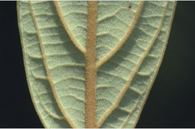
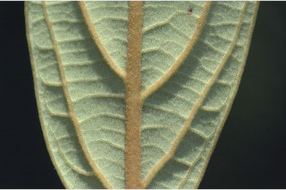
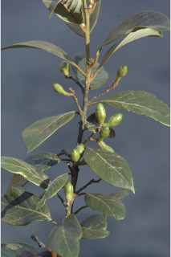
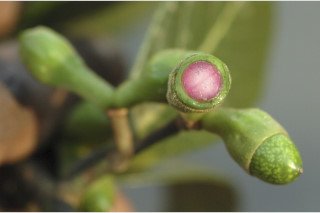
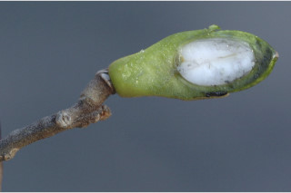
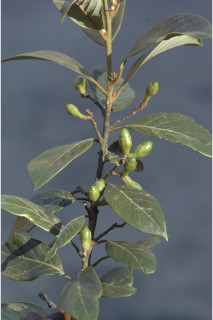
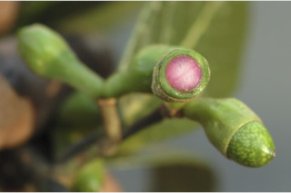
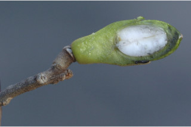

Branchlets subterete, tomentose.
ಎಳೆಯ ಕಿರುಕೊಂಬೆಗಳು ಉಪದುಂಡಾಗಿದ್ದು, ದಟ್ಟ ಮೃದು ತುಪ್ಪಳ ಸಹಿತವಾಗಿರುತ್ತವೆ.
Branchlets subterete, tomentose.
சிறியநுனிக்கிளைகள் குறுக்குவெட்டுத் தோற்றத்தில் கிட்டதட்ட வளையமானது, உரோமங்களுடையது.
Leaves simple, alternate, spiral; petiole to 2.5 cm long, planoconvex in cross section, tomentose; lamina 4.5-15 x 2-9 cm, elliptic, apex acute to attenuate rarely obtuse, base acute, margin entire and slightly recurved, tomentose beneath, subcoriaceous; midrib raised above; secondary_nerves 6-8 pairs; tertiary_nerves horizontally percurrent.
ಎಲೆಗಳು ಸರಳವಾಗಿದ್ದು, ಪರ್ಯಾಯ ಮತ್ತು ಸುತ್ತು ಜೋಡನಾ ವ್ಯವಸ್ಥೆಯಲ್ಲಿರುತ್ತವೆ; ತೊಟ್ಟುಗಳು 2.5 ಸೆಂ.ಮೀ. ವರೆಗಿನ ಉದ್ದವಿದ್ದು ಅಡ್ಡ ಸೀಳಿದಾಗ ಸಪಾಟ ಪೀನ ಮಧ್ಯದ ಆಕಾರ ಹೊಂದಿರುತ್ತವೆ,ದಟ್ಟ ಮೃದುತುಪ್ಪಳ ಸಹಿತವಾಗಿರುತ್ತವೆ;ಪತ್ರಗಳು 4.5-15 X 2-9 ಸೆಂ.ಮೀ. ಗಾತ್ರ ಹೊಂದಿದ್ದು ಅಂಡವೃತ್ತದ ಆಕಾರ ಹೊಂದಿದ್ದು, ಚೂಪಾದುದರಿಂದ ಒಳಬಾಗಿದ ಮಾದರಿವರೆಗಿನ ಅಥವಾ ಅಪರೂಪವಾಗಿ ಚೂಪಲ್ಲದ ತುದಿ, ಚೂಪಾದ ಬುಡ, ನಯವಾದ ಮತ್ತು ಸ್ವಲ್ಪಮಟ್ಟಿಗೆ ಹಿಂಚಾಚಿದ ಅಂಚು ಹೊಂದಿದ್ದು ತಳಭಾಗದಲ್ಲಿ ದಟ್ಟ ಮೃದುತುಪ್ಪಳ ಸಮೇತವಿರುತ್ತವೆ, ಪತ್ರಗಳ ಮೇಲ್ಮೈ ಉಪತೊಗಲನ್ನೋಲುವ ಮಾದರಿಯಲ್ಲಿರುತ್ತವೆ; ಮಧ್ಯ ನಾಳ ಮೇಲ್ಭಾಗದಲ್ಲಿ ಮೇಲೆದ್ದಿರುತ್ತದೆ;ಎರಡನೇ ದರ್ಜೆಯ ನಾಳಗಳು 6 ರಿಂದ 8 ಜೋಡಿಗಳಿರುತ್ತವೆ;ಮೂರನೇ ದರ್ಜೆಯ ನಾಳಗಳು ಲಂಬ ರೇಖೆಗೆ ಸಮಕೋನದಲ್ಲಿದ್ದು, ಎಲೆಯ ದಿಂಡಿಗೆ ಅಡ್ಡವಾಗಿ ಕೂಡುತ್ತವೆ.
Leaves simple, alternate, spiral; petiole to 2.5 cm long, planoconvex in cross section, tomentose; lamina 4.5-15 x 2-9 cm, elliptic, apex acute to attenuate rarely obtuse, base acute, margin entire and slightly recurved, tomentose beneath, subcoriaceous; midrib raised above; secondary_nerves 6-8 pairs; tertiary_nerves horizontally percurrent.
இலைகள் தனித்தவை, மாற்றுஅடுக்கமானவை, சுழல் போன்று அமைந்தவை; இலைக்காம்பு 2.5 செ.மீ. நீளமானது, குறுக்குவெட்டுத் தோற்றத்தில் பிளேனோகான்வக்ஸ், உரோமங்களுடையது; இலை அலகு 4.5-15 x 2-9 செ.மீ., நீள்வட்ட வடிவானது, அலகின் நுனி கூரியது முதல் அட்டனுவேட் அரிதாக மெட்டையானது, அலகின் தளம் கூரியது, அலகின் விளிம்பு முழுமையானது மற்றும் பின்புறம் சிறிது வளைந்து காணப்படும், அலகின் கீழ்பரப்பு உரோமங்களுடையது, சப்கோரியேசியஸ்; மையநரம்பு மேற்புறத்தில் அலகின் பரப்பைவிட உயர்ந்து இருக்கும்; இரண்டாம் நிலை நரம்புகள் 6-8 ஜோடிகள்; மூன்றாம் நிலை நரம்புகள் விளிம்பு நோக்கிய பெர்க்கரண்ட்..
Inflorescence umbellules in racemes; peduncle 1.5 cm long; flowers unisexual, sessile.
ಪುಷ್ಪಮಂಜರಿ ಉಪಪೀಠಛತ್ರ ಮಂಜರಿಗಳಾಗಿದ್ದು ಮಧ್ಯಾಭಿಸರ ರೀತಿಯಲ್ಲಿ ಜೋಡಿತಗೊಂಡಿರುತ್ತವೆ; ವೃಂತ 1.5 ಸೆಂ.ಮೀ. ಉದ್ದವಿರುತ್ತದೆ;ಹೂಗಳು ಏಕಲಿಂಗಿಗಳಾಗಿದ್ದು ತೊಟ್ಟುರಹಿತವಾಗಿರುತ್ತವೆ.
Inflorescence umbellules in racemes; peduncle 1.5 cm long; flowers unisexual, sessile.
மஞ்சரி சிறுஅம்பல் வகை ரெசீம் மஞ்சரி; மஞ்சரிகாம்பு 1.5 செ.மீ. நீளமானது; மலர்கள் ஓர் பாலானவை, காம்பற்றது.
Berry, ellipsoid, 1.5 cm across, accrescent perianth to about the middle.
ಬೆರ್ರಿಗಳು ಚತುಸ್ರಾಕಾರದಲ್ಲಿದ್ದು, 1.5 ಸೆಂ.ಮೀ. ಅಡ್ಡಗಲತೆ ಹೊಂದಿರುತ್ತವೆ,ವೃಧ್ಧಿಸಿದ ಪರಿದಳ ಮಂಡಲ ಮಧ್ಯದವರೆಗಿರುತ್ತದೆ.
Berry, ellipsoid, 1.5 cm across, accrescent perianth to about the middle.
முழுச்சதைகனி (பெர்ரி), நீள்வட்ட வடிவானது, 1.5 செ.மீ. குறுக்களவுடையது, நிரந்தரமான ப்ரீயான்த் இதழ்கள் உடையது.


 



 




